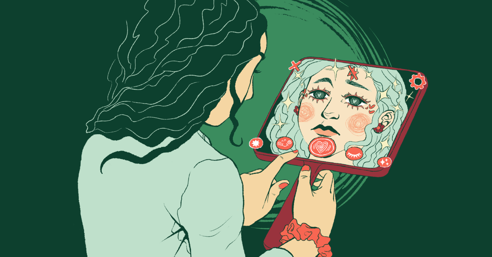
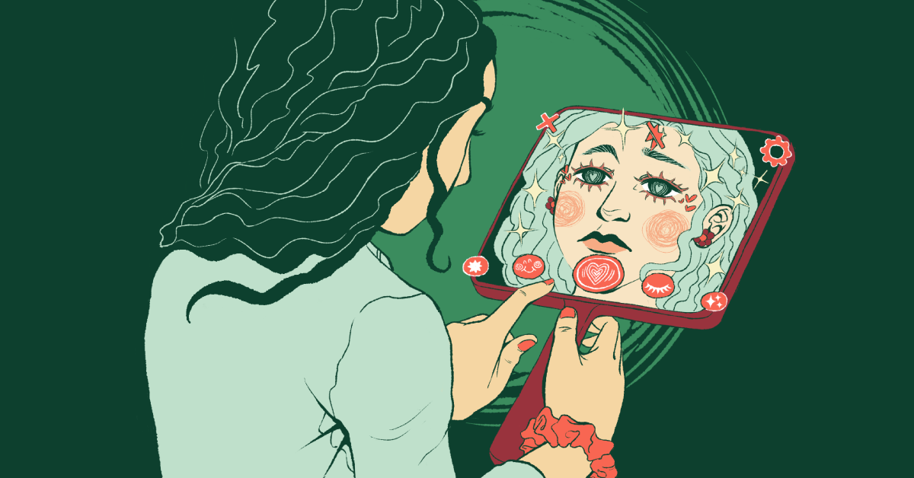

ANXIETY / DEPRESSION
Researchers believe that one problem is that social media use can disrupt sleep, and poor sleep can lead to anxiety and depression. Social media use at night disrupts sleep in a number of ways: People stay up late online, the light from the screen can disrupt one’s circadian rhythm, and many people wake up in the night in order to check or respond to messages. Adolescents report that they use social media at night, even when it affects their sleep. They worry that if they do not use their phone at night, they will miss out on potential social interactions online, which they believe would have a negative effect on their in-person social relationships
CYBER BULLYING
While bullying existed long before the internet, the rise of smartphones and social media has brought a new and more public arena into play for this aggressive behavior. Nearly half of U.S. teens have been bullied or harassed online, with physical appearance being seen as a relatively common reason why. Older teen girls are especially likely to report being targeted by online abuse overall and because of their appearance. This leads to other problems that also arise with the current state of social media.
BODY DYSMORPHIA
Beauty standards are fluid within society and can morph based on cultural practices and societal interaction, such as social media exposure. This leads users to check their appearance constantly and find flaws in their perceived virtual appearance. Studies have shown that frequent social media use may lead to unrealistic body image ideals, a significant concern with appearance, and anxiety. Also, social media exposure can worsen body image dissatisfaction, social networking site addiction, and comorbidities of body dysmorphic disorder, such as depression and eating disorders.
INNAPROPRIATE CONTENT
Meta Whistleblowers, Frances Haugen and Arturo Bejar, came forward with troves of internal documents that she said proved how Instagram was aware its service may be harming children. Bejar states his own 14-year-old daughter received from unwanted sexual advances from strangers on Instagram as evidence. Though his daughter reported the incidents, he said, Meta did nothing. Haugen and Bejar call for Meta to be held accountable and for more measures to be put in place to protect children